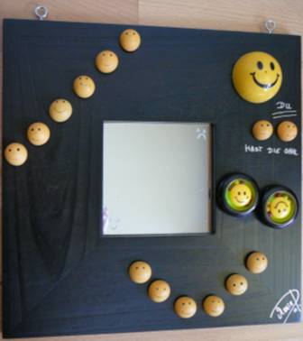
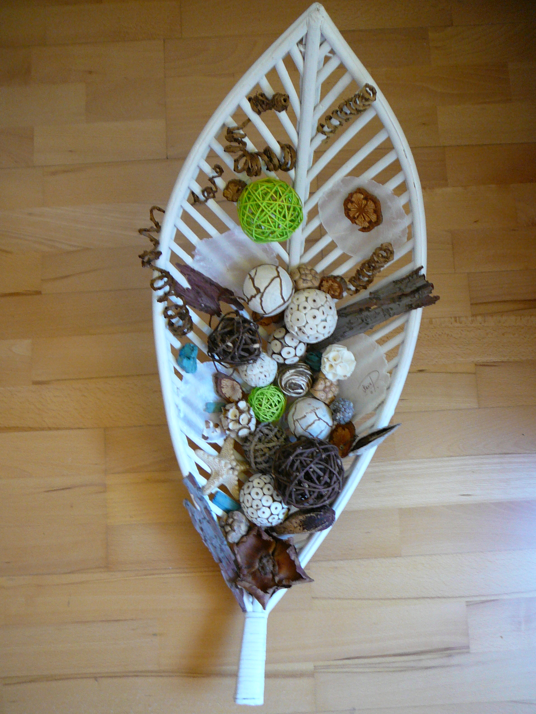
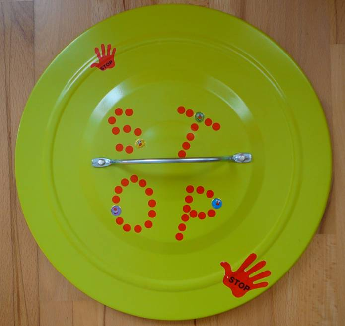
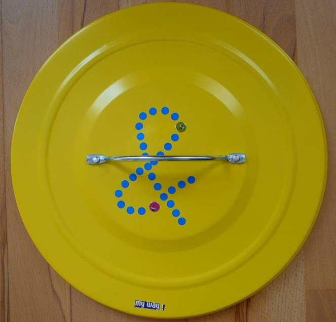
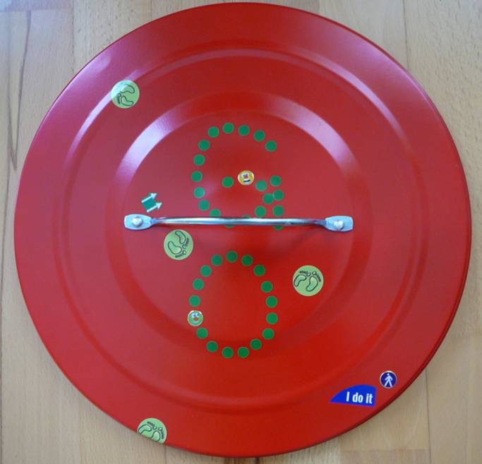

Objektkunst & Mixed Media

a man in the mirror
2011 - 25,5 x 25,5
Mixed Media

a woman in the mirror
2011 - 25,5 x 25,5
Mixed Media

the animal farm
2011 - 25,5 x 25,5
Mixed Media Installation

Du hast die Wahl
2011 - 25,5 x 25,5
Mixed Media

erdverknüpft - herzhaft wachsen
2011 - 30x45,5
Mixed Media

gefülltes Blatt
2010 - H 43,5, B 30, L ca. 65
Mixed Media Installation

Des Glück in der Schale
2011
Another Brick in the Wall-Reihe
Another Brick in the Wall-Reihe
2011 - 30x30
8 Objekte: red ribbon / working poor / weiße Feder / Süchte / pink ribbon / Verhütung / NO body is perfect / soziale Verarmung

Alles im Griff?
"stop & go in einer verquerten Welt"
2012 - Klebesticker auf 3 Eimerdeckeln



